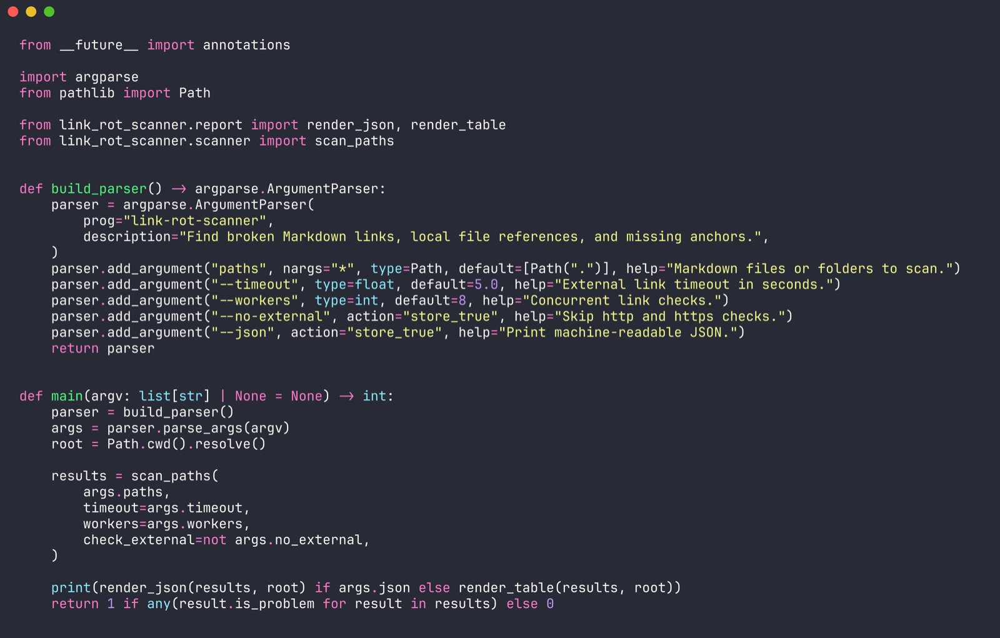
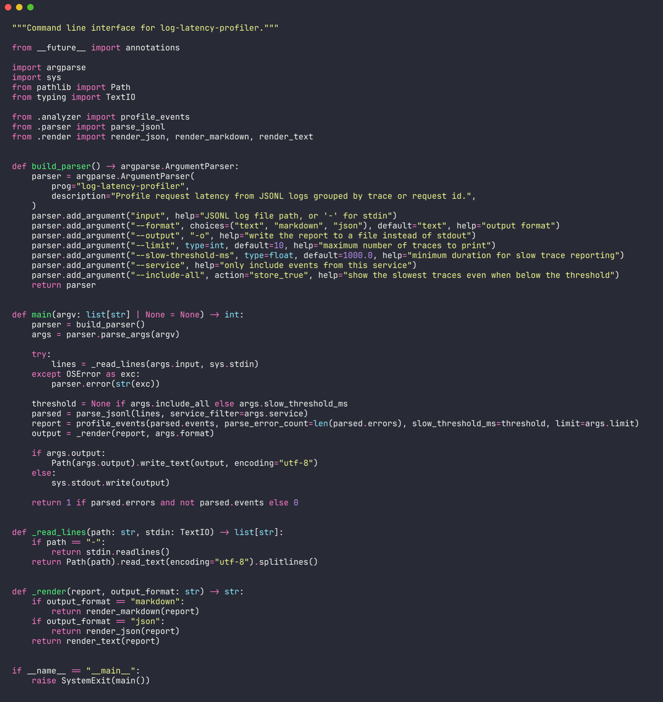
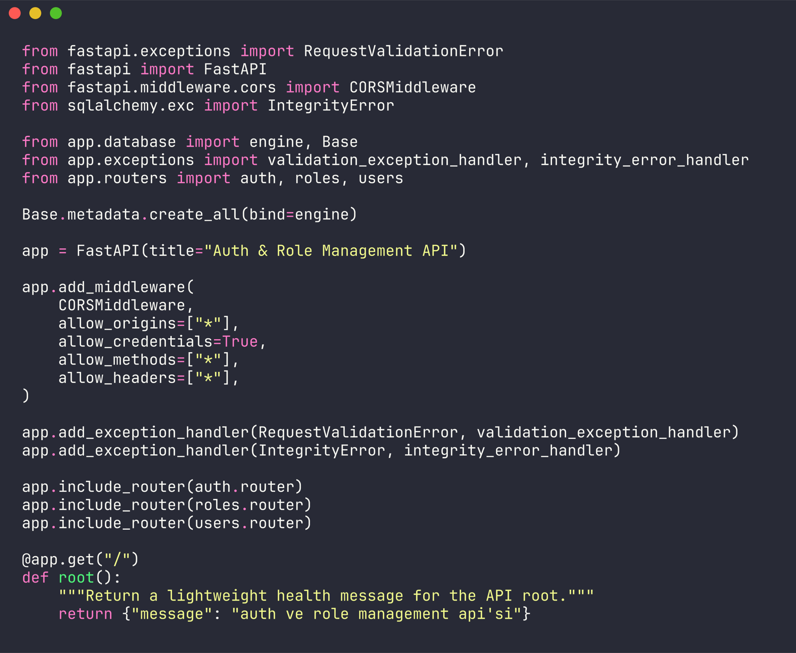
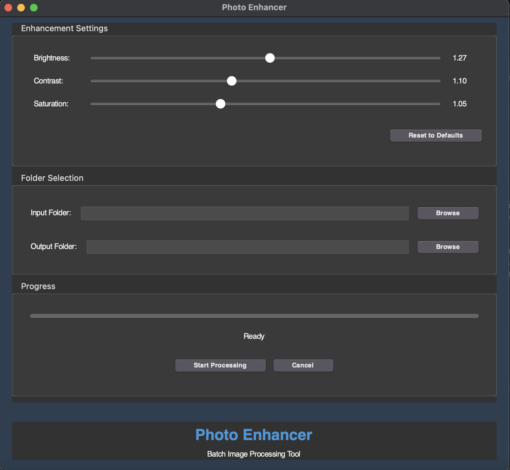
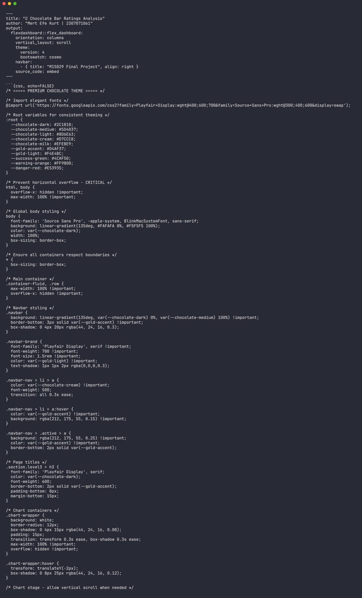

Python
CLI tools, automation scripts, log processing, API services and maintainable backend structure.
Python, SQL and backend automation
I build backend services, automation and developer tools that turn operational complexity into maintainable software.

Core technologies
I approach backend and data work with a practical mindset: understand the real workflow, remove repeated effort, expose failures clearly and leave the code easier to operate.
My recent work covers database programming, query performance, Python automation, ETL-style data movement and focused developer tools. I value readable systems over unnecessary complexity.
A focused stack for backend development, automation, data analysis and repeatable delivery.
CLI tools, automation scripts, log processing, API services and maintainable backend structure.
Query design, performance thinking, relational models, stored procedures and data validation.
FastAPI, authentication flows, route organization, validation and service boundaries.
Docker, Git, Linux workflows and environment-aware development.
Audits local files, Markdown anchors and external URLs across documentation-heavy repositories. It supports concurrent checks, JSON output and CI-friendly exit codes.
View source
Groups application logs by trace, identifies slow requests and exports useful incident evidence without sending data to an external SaaS platform.
View source
A compact authentication and role-management backend with registration, protected routes and clear validation boundaries.
View source
A desktop workflow for batch image enhancement with adjustable brightness, contrast and saturation controls.
View source
An interactive analysis of global chocolate bar ratings, origins, cocoa percentages, ingredients and quality patterns.
Professional database work reinforced a practical approach to automation and operational reliability.
Ekofin.net
Worked across database structure, SQL performance, ETL-style data movement and automation for operational workflows.
Contact
I am open to backend, automation and data-focused opportunities.